×
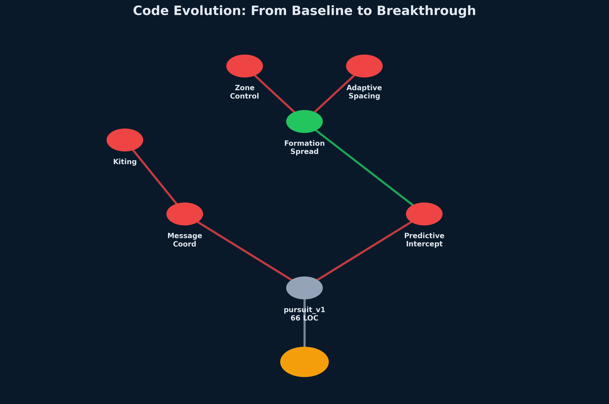
Human writes every line.
Slow, predictable, brittle.
👥 5–10 engineers
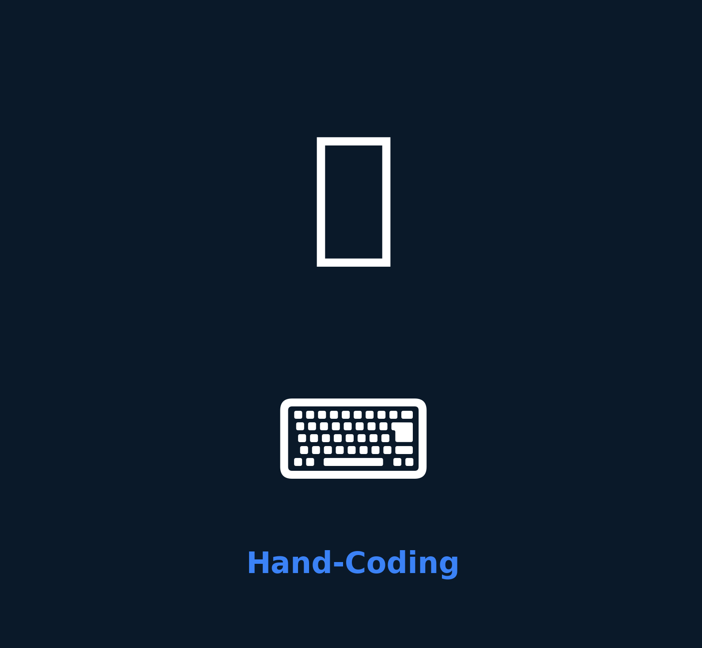
LLM generates code.
Fast, unreliable, hallucinates.
👥 1 engineer
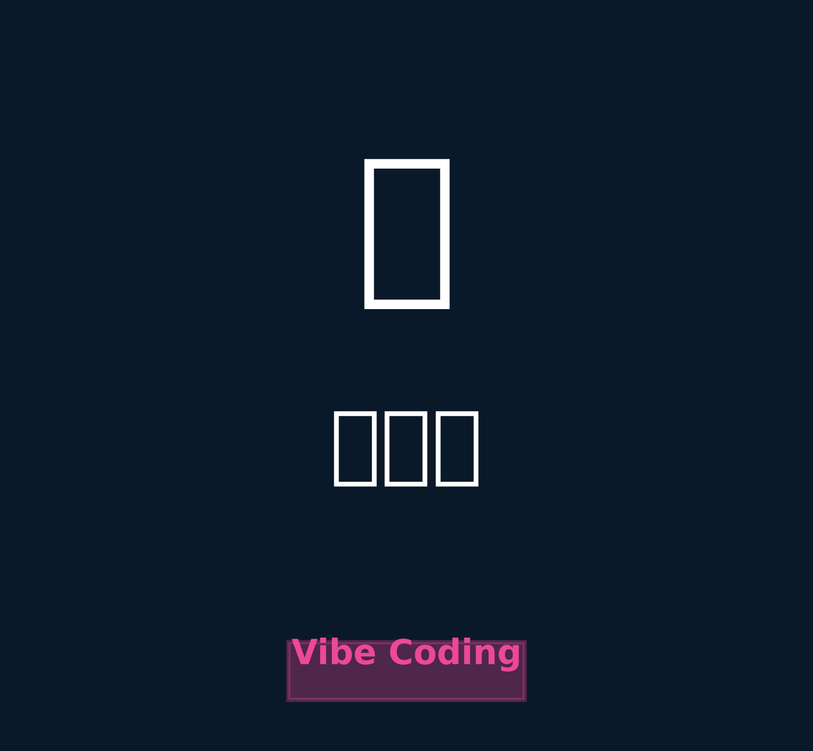
Mutation, selection, iteration.
Emergent, adaptive, measurable.
👥 1 evolution engineer
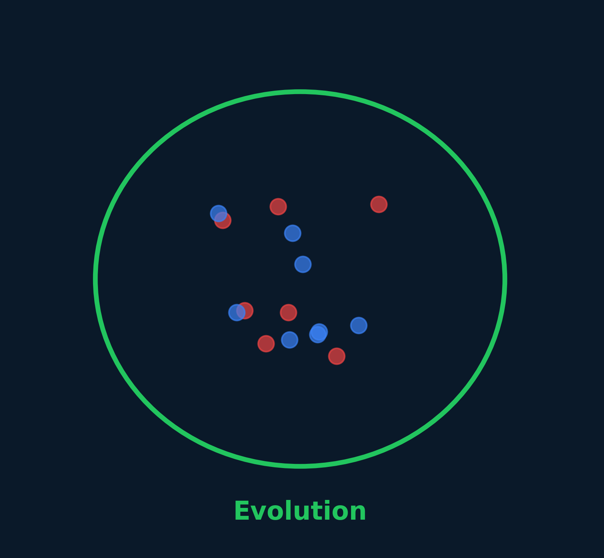
Same algorithm. Different substrate.
DNA → Source code · Predator → Opponent · Generations → Rounds
Random mutation + natural selection.
LLM proposes random code changes → fitness test → accept if better.
Acquired traits are inherited (learning passes to offspring).
LLM reflection loop: "I failed because X" → next mutation avoids X.
Evolution has direction (mutations are guided, not random).
Constrained mutation space: "only mutate formation logic, preserve message protocol."
Biology rejected Lamarck and Orthogenesis.
But in code, we can inherit learned behaviors. We can guide mutation.
Evolution is a tool, not a dogma.
🔴 Team A (final champion, 204 LOC) vs 🔵 Team B (baseline, 66 LOC) — Round 1
Key tension: Information asymmetry (hidden cooldowns) + coordination (message protocol) = emergent swarm tactics.
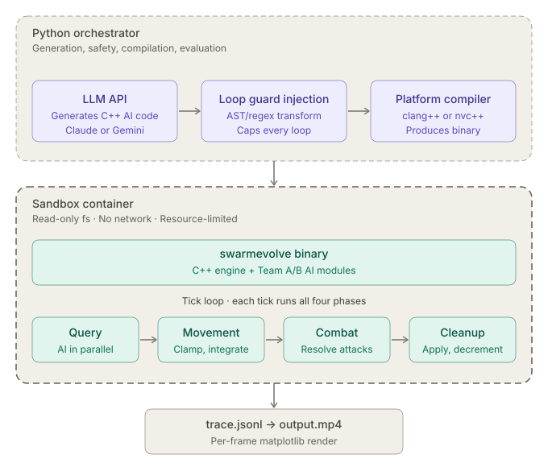
🔵 Blue Fleet vs 🔴 Red Fleet — Simulated engagement
Fully automated: 95 rounds · ~90 minutes · ~$10 in API credits · Zero human intervention after launch.
When both teams evolve against each other, weaker teams can discover counter-tactics that surpass initially stronger opponents.
Sonnet 4 (planner) + Haiku 4.5 (coder)
Rounds:
95 total · alternating teams (A: even, B: odd)
Matches:
10 per fitness evaluation
Acceptance:
Relative mode (champion − 0.05)
Reflection:
Strict (enhanced journal validation)
Budget:
~$10 · ~90 minutes · 1 consumer GPU
pursuit_v1 baselineCan a 66-line underdog evolve to beat a 204-line champion? Let's find out →
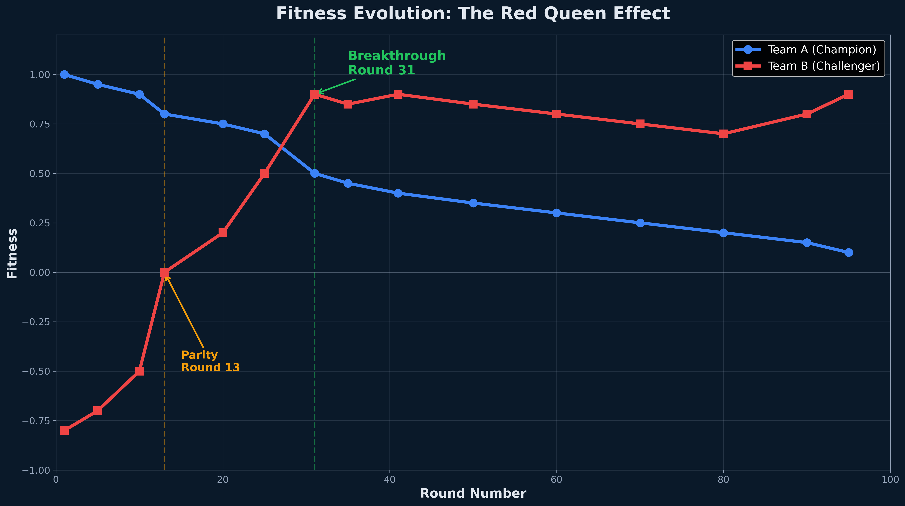
Team B (red) overtakes Team A (blue) at Round 31
Team B went from losing 8 out of 10 battles to dominant winner — in 95 rounds of unguided evolution.
Formation Spread — a single parameter change:
min_spacing = 80
Drones stopped clustering, became harder to hit en masse. No human ever designed this tactic.
The recipe worked. Evolution found a way.
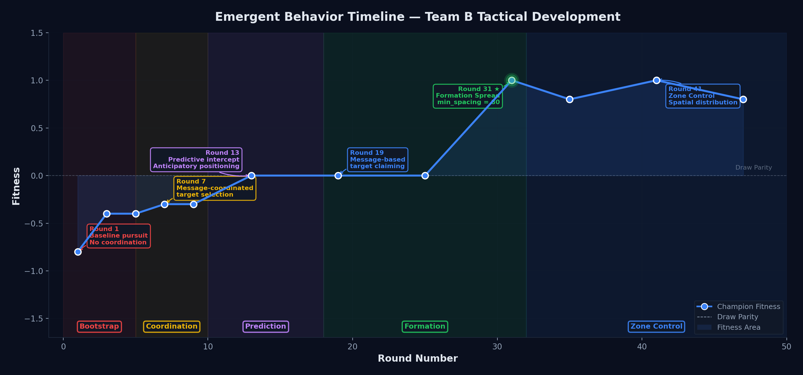
These tactics have names because we observed them. The LLM didn't plan "zone control." Across both teams: 55 mutation attempts. 8 accepted. This is one of them.
Tactic: Message-Coordinated Targeting
What changed: Each drone broadcasts its intended target_id in message[2].
Why it helped: No more 5 drones piling onto 1 enemy while 4 others escape. Each drone claims a unique target.
Tactic: Predictive Intercept Swarm
What changed: Each drone analyzes enemy positions and predicts their retreat vectors, then leads the shot.
Why it helped: Shooting at "now" misses a moving target. Leading the target hits it.
Tactic: Formation Spread → Zone Control with Baiting
What changed: Drones maintain 80-unit minimum spacing; formation covers 60% of the arena.
Why it helped: No friendly fire. Multiple firing angles. No escape lanes.
Communication alone couldn't win. Prediction couldn't dominate.
Evolution stacked them in order — and the combination was the breakthrough.
// Simple pursuit
for (int i = 0; i < num_enemies; i++) {
if (!enemies[i].alive) continue;
float dx = enemies[i].x - my_x;
float dy = enemies[i].y - my_y;
float dist = sqrtf(dx*dx + dy*dy);
if (dist < closest_dist) {
closest_dist = dist;
target_id = i;
move_x = dx;
move_y = dy;
}
}
// Normalize and move
float mag = sqrtf(move_x*move_x + move_y*move_y);
if (mag > 0.01f) {
move_x /= mag;
move_y /= mag;
}// Formation Spread with repulsion
float repulse_x = 0.0f;
float repulse_y = 0.0f;
for (int i = 0; i < num_allies; i++) {
if (i == my_id || !allies[i].alive) continue;
float dx = my_x - allies[i].x;
float dy = my_y - allies[i].y;
float dist = sqrtf(dx*dx + dy*dy);
const float min_spacing = 80.0f; // ← THE KEY LINE
if (dist < min_spacing && dist > 0.01f) {
float push_x = dx / dist;
float push_y = dy / dist;
float strength = (min_spacing - dist) / min_spacing;
repulse_x += push_x * strength;
repulse_y += push_y * strength;
}
}
// Combine pursuit + repulsion
move_x = 0.6f * pursuit_x + 0.4f * repulse_x;
move_y = 0.6f * pursuit_y + 0.4f * repulse_y;
One constant. 80 units. Emergent zone coverage.
The swarm didn't know it was inventing a strategy. It just... worked.
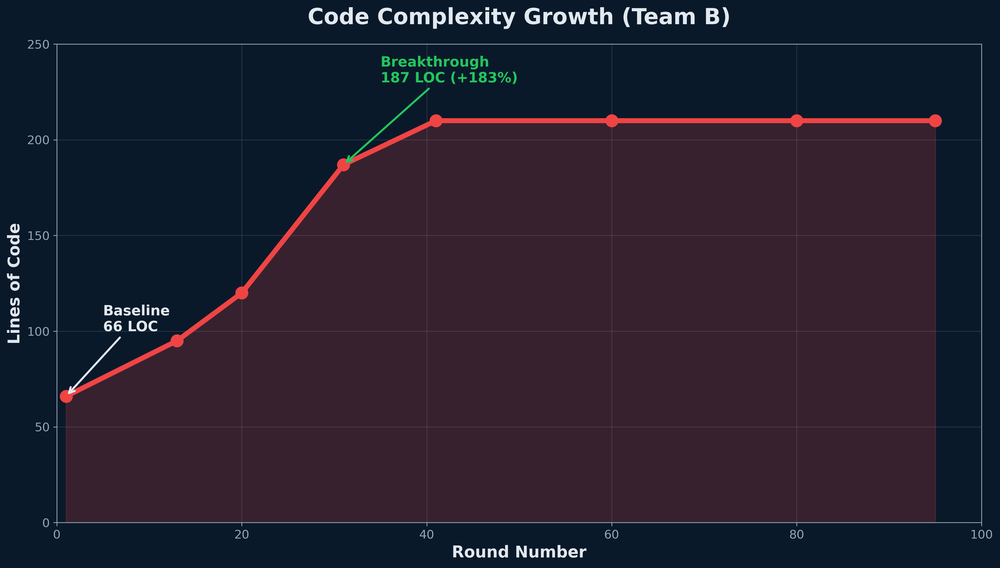
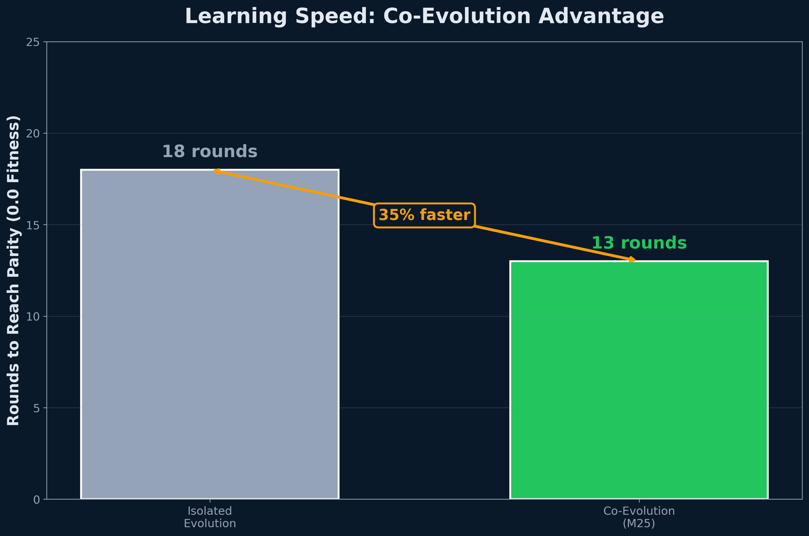
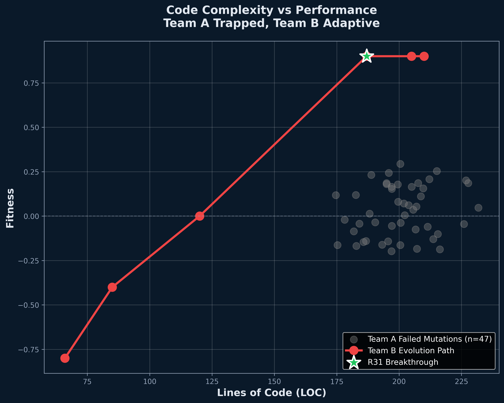
Evolution doesn't just happen. Someone has to design the rules of the game: what counts as success, when a mutation gets accepted, how to keep the system from grinding to a halt. That person is an Evolution Engineer.
"One shared codebase, or one per individual?"
"Who evolves when — and how often?"
"What exactly are we rewarding?"
"How do we keep evolution from stalling?"
"What's the LLM allowed to change?"
"When are we done?"
Six dials. Turn them differently — get a different evolution.
One C++ file represents the team. Every drone runs the same code. The whole "species" mutates as one unit.
ProsEach individual has its own code. A whole population evolves with diversity, sub-species, even crossover.
ProsWe picked shared. Speed of iteration mattered more than diversity for one experiment.
The mechanic of mutation. Runs hundreds of times per experiment.
The shape of competition. Decides who is the opponent — and when.
Inner loop asks: "Did this mutation help?"
Outer loop asks: "Who is the opponent now?"
Simple. Honest.
⚠ Plateaus when both sides get good — no signal to climb past 50/50.
Richer signal early on.
⚠ Game-able — agent farms easy points instead of winning.
Adaptive — measures you against the current opponent, not a static yardstick.
✓ Prevents overfitting. Pairs naturally with co-evolution.
Once a system finds a "good enough" answer, mutations stop helping. Without intervention, fitness flatlines.
Nature has five tricks. Engineers borrow them.
We bet on Red Queen pressure — alternating opponents, forcing each to keep adapting.
If the experiment had stalled, we had four backup mechanisms ready.
Maximum exploration. Risks compile failures, runtime crashes.
Focused, safe. May miss novel solutions outside the sandbox.
Compile-time inserts memory bounds, infinite-loop detectors.
LLM rewrites freely; we inject loop-guards & memory bounds at compile. No infinite loops. No leaks. No black-box crashes.
Predictable cost. Easy to compare experiments.
Saves money on dead runs; risks premature stop.
Clear success criterion; assumes you know the goal.
Let it run. Cheap if you have spare compute.
Predictable, re-runnable for ablation studies, fits a lunch break.
Bounds = "what" can change. Termination = "when" we stop watching.
Frontend and backend evolve together, optimizing for latency, throughput, cost. APIs compete for efficiency.
Code that adapts to attacks in real time. Firewall rules evolve against adversarial traffic patterns.
Mutate code until tests pass. Fitness = % tests green. Let evolution fix bugs while you sleep.
Modules co-evolve for mutual benefit. Database queries optimize alongside indexing strategies.
What if all software was alive?
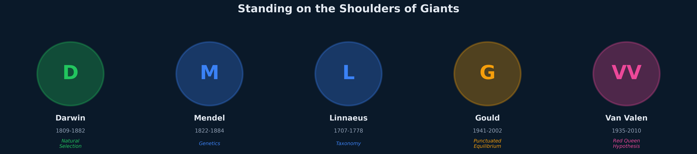
git clone https://github.com/leybzon/SwarmEvolve
cd SwarmEvolve
python3 scripts/evolve_coevolve.py \
--init-champion-a data/runs/m22_rq1_100gen/gen_0033/candidate.cpp \
--init-champion-b src/baselines/pursuit_v1.cpp \
--planner-model claude-sonnet-4-20250514 \
--coder-model claude-haiku-4-5 \
--rounds 100 --n-matches 10 --seed 42 \
--acceptance-mode relative --strict-reflectionQuestions? Open an issue on GitHub or contact Gene Leybzon.